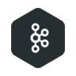
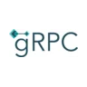
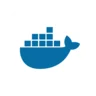
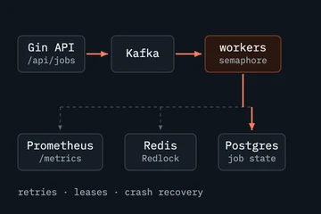
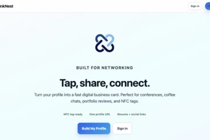
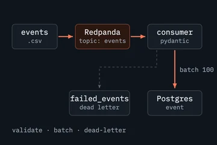
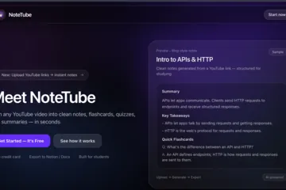
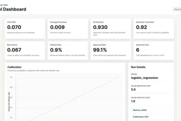
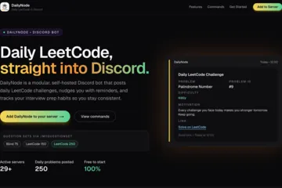
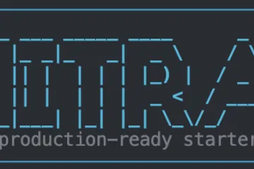

Open to Summer 2027 SWE & DS internships
Hi, I'm Justin
Distributed systems engineer building high-performance backend & data infrastructure
Go · Python · PostgreSQL · gRPC · Kafka · AWS
About Me
I'm a backend and distributed systems engineer studying Computer and Data Science at Rutgers. Most of my work lives in the server layer: high-performance infrastructure, services that coordinate across process boundaries over gRPC and Protobuf, and the data pipelines feeding them. I write mostly Go and Python, usually with Gin or FastAPI in front, and I spend a lot of time in SQL - Postgres, MySQL, MongoDB, and pgvector when the problem is semantic search - deployed across AWS and GCP.
What I actually care about is performance. Where the latency is hiding, which query is doing ten times the work it needs to, how a system degrades instead of collapsing when load shows up unannounced. There's a real gap between code that works and code that holds up under production conditions, and closing that gap - through profiling, better API design, and data models that stay correct when things go wrong - is the part of the job I like most.
Outside of school and code, I bowl, box, play basketball, volleyball, and pickleball, and pick up the guitar when I want to slow down. I'm also someone who needs regular walks with music in my ears to think clearly, and I make time for my friends whenever I can. It keeps me balanced against the hours I spend heads down in a terminal.
Tools I reach for day to day
- Go
- Python
- SQL
- PostgreSQL
- Redis

Kafka
gRPC- FastAPI

Docker- Kubernetes
- Nginx
- AWS
Experience
-
Myntlo
Founder
At Myntlo, we believe every conversation should create clarity, momentum, and action. Our mission is to help people and teams turn meetings into meaningful progress by bringing important ideas, decisions, and next steps back into focus. We build with simplicity, speed, and trust in mind, helping teams stay aligned and move forward with confidence.
-
Arka
Software Engineer Intern
I own and execute backend infrastructure tickets supporting Arka's core platform, from investigating system failures to architecting fixes and validating outcomes in production. My work includes building Postgres-backed job reliability systems, such as a stale-job reaper with automated requeue logic, and hardening webhook delivery through retry-with-backoff and persistent delivery logging, focusing on correctness and reliability across distributed backend services.
-
Deepiri
Software Engineer Intern
I contributed to strengthening the performance, scalability, and reliability of backend systems within a distributed architecture. I worked on improving how services handled high traffic, failures, and real-world production load while increasing system observability, focusing on resilient infrastructure that could scale efficiently and operate reliably under pressure.
-
Outamation
AI/ML Engineer Extern
I built an end-to-end document intelligence system for large, unstructured mortgage PDFs. I focused on layout-aware OCR extraction and Retrieval-Augmented Generation pipelines that enable semantic search and Q&A over complex documents, then wrapped the final system in an interactive chatbot for real-world mortgage automation use cases.
Projects
-

Conduit
Distributed job queue and lightweight ELT runtime in Go, built so background work survives crashes and restarts: Gin intake, Kafka transport, Postgres job state with leases, Redis Redlock for mutual exclusion, and Prometheus metrics.
-

LinkNest
Multi-tenant link-in-bio service in Go where the real work sits in the data layer: idempotent click ingestion, an append-only event log, and batched hourly and daily analytics rollups, load-tested with k6.
-

Pulsegrid
Event pipeline that streams clickstream records through a Redpanda topic into Postgres, with Pydantic validation on every message, batched inserts, and a dead-letter table for anything that fails to parse.
-

NoteTube
Turns YouTube videos and audio into structured notes. Celery workers move the 30-150 second transcription and embedding pipelines off the request path, a dedicated content service talks over gRPC, and semantic search runs on pgvector.
-

RiskScore
Leakage-aware credit default risk pipeline on Lending Club data, with time-based validation, calibration analysis, XGBoost, SHAP, and reproducible reports.
-

DailyNode
Modular Discord bot for interview prep: scheduled daily LeetCode and NeetCode posts, per-guild feature toggles so each server tunes its own workflow, containerised and deployed on Google Cloud.
-

Initra
Cross-platform CLI that scaffolds production-ready starter projects across Python, Node.js, Ruby, Java, Go, and C++ from a single command, including virtualenv setup and optional GitHub repo creation.
-
RU My Valentine
Campus matching platform with authentication, compatibility scoring, and scalable search, built for high-traffic event usage.
Get in touch
Have a role, a project, or a systems problem you want a second pair of eyes on? LinkedIn is the fastest way to reach me, and email works just as well.